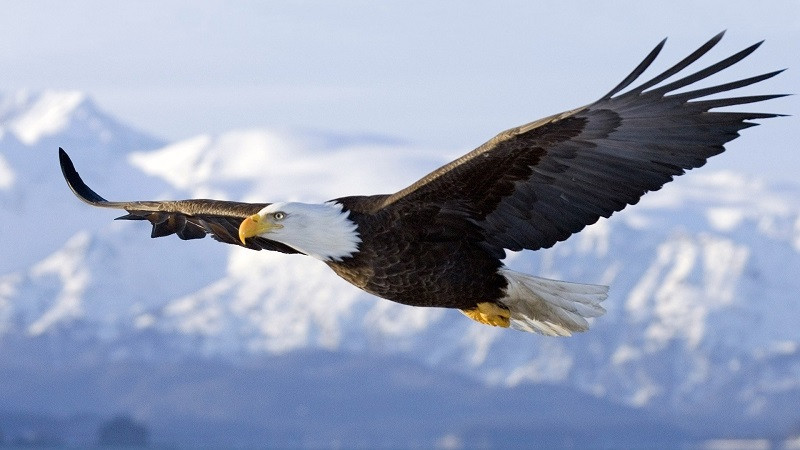

- Зайцев можно встретить на всех континентах, кроме Антарктиды.
- Вопреки распространённому мнению, зайцы не являются вегетарианцами — они охотно употребляют в пищу мясо.
- Такие похожие друг на друга зверьки, как зайцы и кролики, не могут иметь общего потомства.
- Везде, где встречаются зайцы, они являются объектом охоты, и не вымерли они до сих пор только потому, что очень активно размножаются.
- Зайцы общаются друг с другом, отбивая передними лапками барабанную дробь.
- Зубы у зайцев растут всю жизнь, поэтому им необходимо грызть что-нибудь твёрдое, чтобы их стачивать.
- Кстати, так петляют зайцы во время бега не просто так — их левые и правые задние лапы асимметричны от рождения.
- Убегая от опасности, зайцы, тем не менее, не покидают территории, которую считают своей.
- Во время бега зайцы способны развивать скорость до семидесяти километров в час.
- В случае необходимости быстро спуститься вниз по склону заяц может сделать это, скатившись на манер колобка.
Орёл
Орёл — птица, которая во многих культурах стала символом отваги, гордости, храбрости и других положительных качеств. В природе нет ему равных соперников среди пернатых.

- Размах орлиных крыльев достигает 2,4 метра при длине тела до 88 сантиметров.
- Орлы парят над землей со скоростью от 190 до 240 километров в час. Если птица видит потенциальную жертву, то может во время пикирования разогнаться до 320 километров в час.
- Высота полета орлов составляет до 7-9 километров. На такую высоту может подняться не каждый самолёт.
- Благодаря особому устройству крыльев орлы способны спокойно летать даже в ураган.
- Каждый глаз орла способен фокусироваться на двух предметах одновременно (у человека – только на одном).
- Орлиные глаза закрывают два века – прозрачное и непрозрачное. Первое защищает глаза от ветра, второе позволяет птицам спать.
- Орлы способны на лету отнять добычу у менее крупной птицы, или атаковать ее саму.
- Самки орлов значительно крупнее самцов.
- Самцы нередко помогают орлицам высиживать яйца.
- Орлы находят себе пару один раз и на всю жизнь. Ученые обнаружили пару, которая прожила вместе более 35 лет.
Кошка
Кошки - загадочные животные, которые многие века живут рядом с человеком. Кажется, что мы знаем о них все, однако нам до сих пор есть чему удивляться.

- Всего существует 33 основных кошачьих породы. А количество домашних кошек в мире достигает 500 миллионов.
- Частота пульса у кошки гораздо выше, чем у человека и составляет от 110 до 140 ударов сердца в минуту.
- В среднем кошки весят около пяти килограммов, а вот кошки Сингапурской породы – всего два с небольшим килограмма.
- Если кошка стоит около вас с поднятым трубой и чуть подрагивающим хвостом – это выражение ее любви к вам.
- Кошка размахивает хвостом в том случае, когда она не может сделать выбор.
- От удовольствия кошки зачастую растопыривают пальцы, выпуская и втягивая когти.
- В дикой природе кошачьи держат хвост горизонтально или опущенным вниз и только домашние кошки могут ходить, подняв хвост трубой.
- Домашние кошки друг с другом не общаются с помощью мяуканья. Этот «язык» они используют исключительно для общения с людьми.
- За свою жизнь кошка может принести до сотни котят.
- Средний срок жизни диких кошек гораздо меньше, чем у домашних и составляет около 5 лет.
Бабуин
Бабуины – млекопитающие, относящиеся к обширному семейству мартышковых. Обитают эти животные в Восточной и Средней Африке. Селиться они в степной или же гористой местности. Есть и другие интересные факты о бабуинах.
- Бабуины живут большими стадами, включающими до 80 особей.
- Нередко стада селятся на кукурузных или просяных полях. Такое соседство сильно вредит сельскохозяйственным культурам.
- Копытные часто пасутся поблизости мест обитания бабуинов. Последние могут намного раньше заметить хищников из-за цветового зрения.
- Бабуины тоже извлекают выгоду из подобного сожительства. Самцам случается охотиться на молодых антилоп.
- На первый взгляд, бабуин может показаться неповоротливым и даже неуклюжим. На самом деле, животные обладают завидной ловкостью.
- Для выражения дружелюбия или покровительства внутри стада бабуины прибегают к своеобразному грумингу. Это процесс выискивания паразитов шерсти партнера.
- Бабуины частые гости зоопарков. В неволе их продолжительность жизни может достигать 50 лет.
- Останки бабуинов возрастом свыше 2 миллионов лет были обнаружены в Южно-Африканской Республике. В частности, внутри пещеры Малапа.
- Стадо остро реагирует на сигнал опасности и всегда приходит на выручку. Однако, помощь пострадавшим и забота о раненых среди бабуинов не распространены.
- Общение бабуинов очень вокализировано. Для коммуникации с сородичами они используют до 30 различных звуков. Включая крики, лай, причмокивание, хрюканье и ворчание.